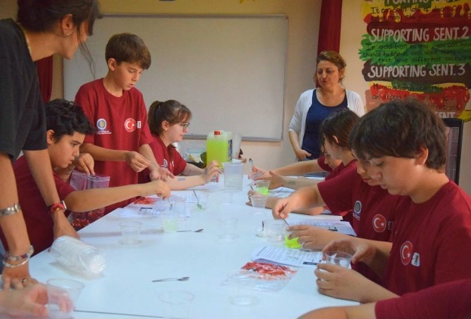
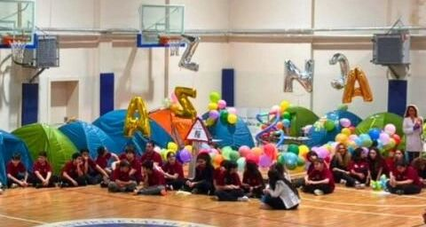
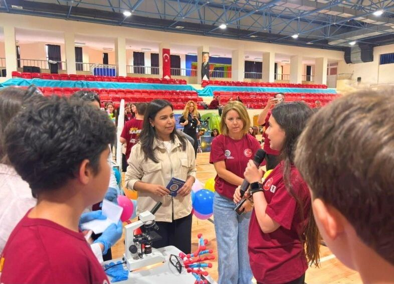
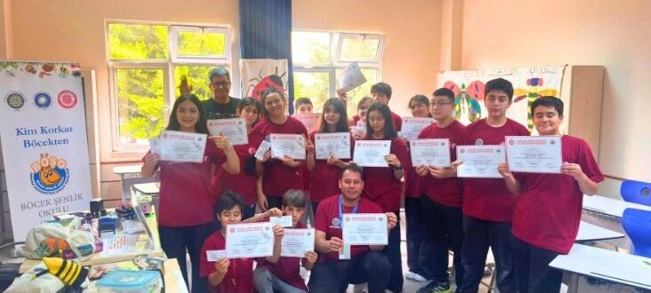

Müridler çileğin deoksiribonükleik asidini çıkarırken

Müridler Aziz Sancar'ı sunmak için hazırlanırken

Müridler, genel müdür Seda Durmaz Yıldız ve ortaokul müdürü Emel Tengilimoğlu'na Aziz Sancar'ı sunarken

Müridler böcek okulundan sertifika alırken
Bilim kampındaki tarikat çadırından aşırılmış pasaport
Şeyh Aykut Eliaçık Aleyhissalâtü Vesselâm Efendi, Allahüme salli âla seyyidina Aykudun ve âla ali seyyidina Aykud